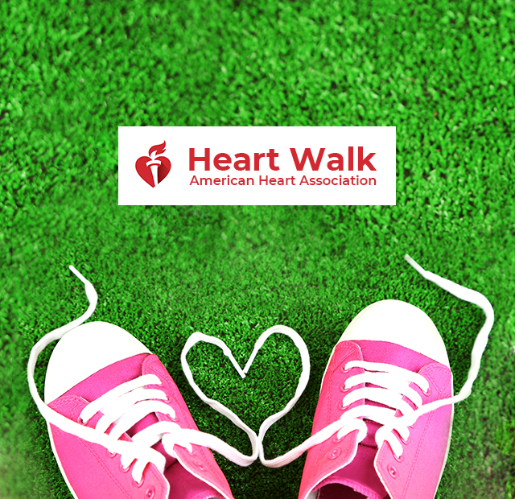
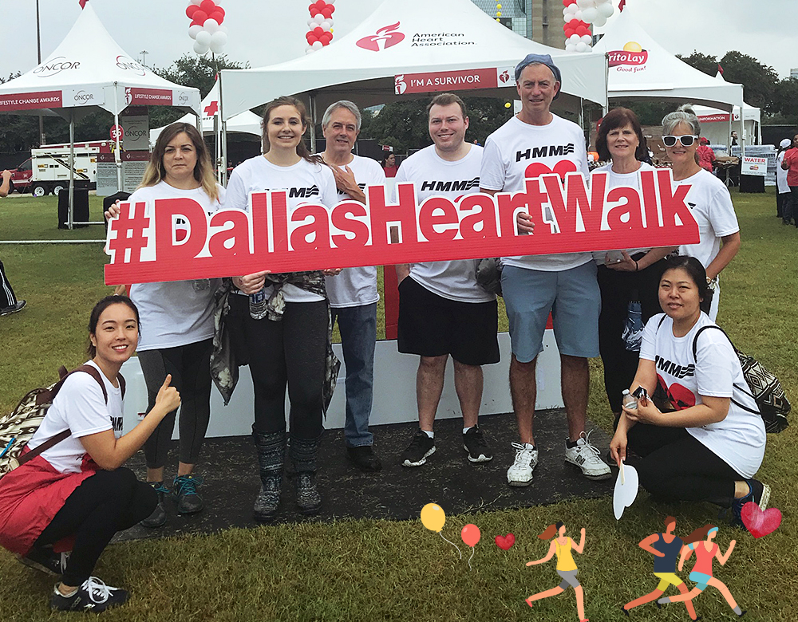
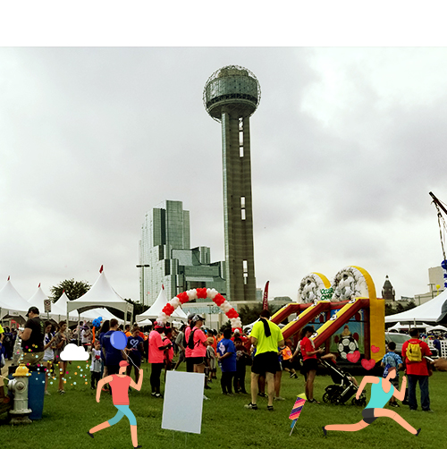
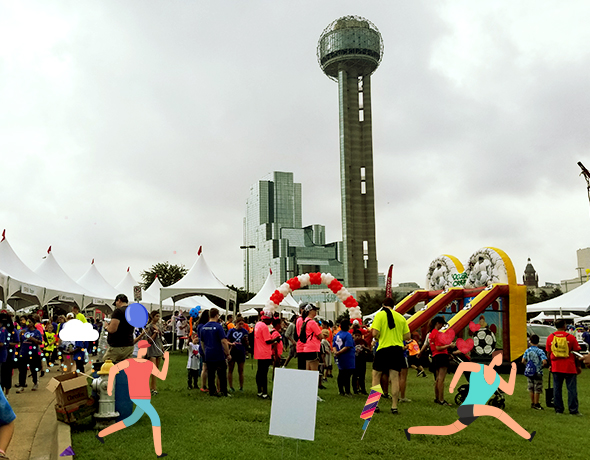
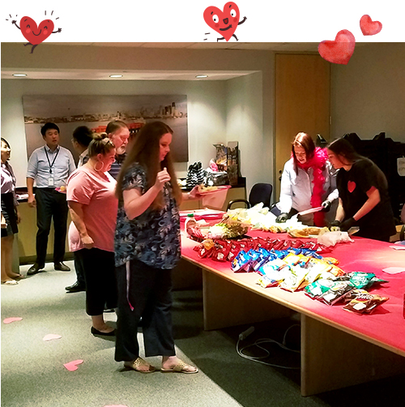
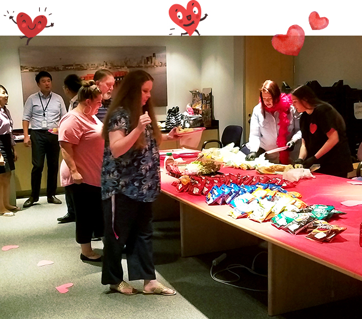
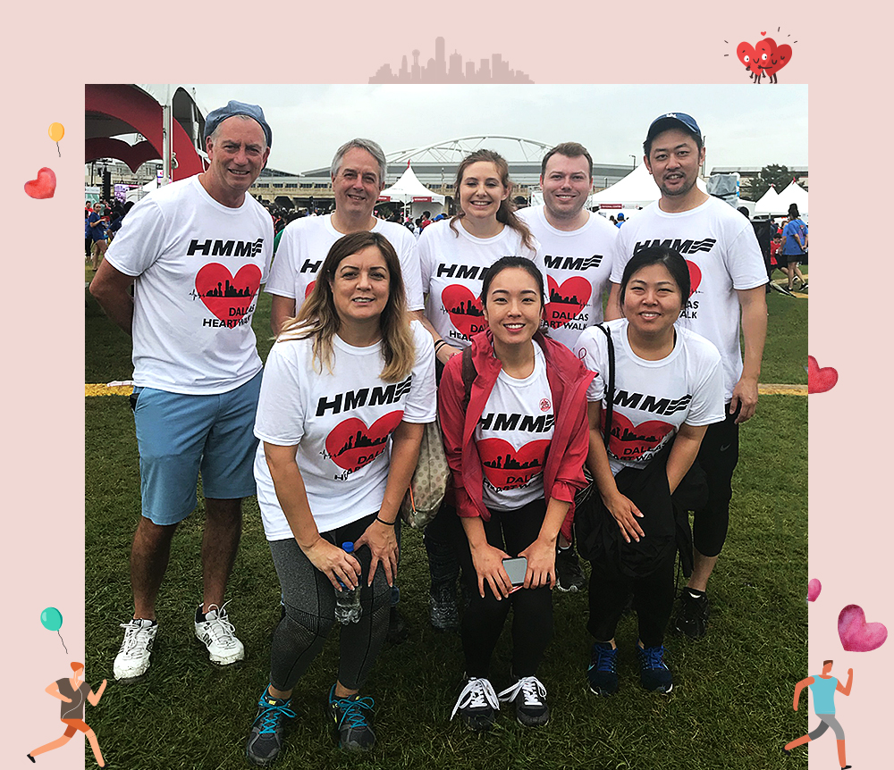
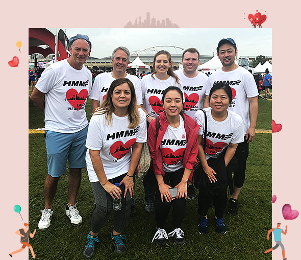

와 제 롤모델이 잡스에요!!! 아이폰 첫 출시되고 나서부터 계속 아이폰 쓰고 있는데 잡스가 너무 그리워요ㅠㅠ 지금은 돈만 벌려고 하는 것 같아서 디자인 발전도 없고ㅠㅠ와 제 롤모델이 잡스에요!!! 아이폰 첫 출시되고 나서부터 계속 아이폰 쓰고 있는데 잡스가 너무 그리워요ㅠㅠ 지금은 돈만 벌려고 하는 것 같아서 디자인 발전도 없고ㅠㅠ와 제 롤모델이 잡스에요!!! 아이폰 첫 출시되고 나서부터 계속 아이폰 쓰고 있는데 잡스가 너무 그리워요ㅠㅠ 지금은 돈만 벌려고 하는 것 같아서 디자인 발전도 없고ㅠㅠ와 제 롤모델이 잡스에요!!! 아이폰 첫 출시되고 나서부터 계속 아이폰 쓰고 있는데 잡스가 너무 그리워요ㅠㅠ 지금은 돈만 벌려고 하는 것 같아서 디자인 발전도 없고ㅠㅠ와 제 롤모델이 잡스에요!!! 아이폰 첫 출시되고 나서부터 계속 아이폰 쓰고 있는데 잡스가 너무 그리워요ㅠㅠ 지금은 돈만 벌려고 하는 것 같아서 디자인 발전도 없고ㅠㅠ
After 6PM
Dallas Heart Walk
with HMM America
Dallas Heart
Walk with
HMM America


Allyson Bogan / HMMA
HMM America participated in the Dallas Heart Walk hosted by the American Heart Association. The association’s mission is to promote a heart healthy lifestyle and reduce death and disability from cardiovascular disease and stroke through medical advancements. The purpose of the event was to spread awareness and show support for the cause by attending the Heart Walk as well as fundraising in the months prior to the event.
In just a few short months, HMM America was able to raise $2,951.84 towards improving patient care, funding lifesaving research and educating adults and children at risk for developing cardiovascular disease. We had 50 participants that either actively fundraised or attended the walk, but we also hosted multiple fundraisers in the office so that our all our Dallas office locations offices could get involved as well. Our 50 registered participants were split up into multiple teams with coaches leading each team so every participant had more support and resources.

Group photo at the Dallas Heart Walk event with HMM employees in front of reunion tower.
One of our well received fundraisers was a bake sale. We had multiple employees from various departments make baked goods to sell during lunch hour and all proceeds went to the American Heart Association. This large collaboration not only enhanced our company’s unity, but also resulted in raising $400. Another team also hosted a luncheon complete with sandwiches, chips, cookies, and drinks and raised $226 in total.


View of event activities with Reunion tower in the background.


Picture of our luncheon fundraiser that raised over $200 for the American Heart Association.
We also gained support from a local family owned restaurant, Lamberti’s Ristorante. They partnered with us to donate 15% of total sales from HMM friends and family who dined with them for the night which raised $70 profit for the cause.
Our most successful fundraiser was our “penny war” challenge. For this challenge, each participating department had a jar set up in their area. Throughout the summer, everyone had the chance to put various loose change or bills in their jars in order to gain points for their department or subtract points from the other departments. This fun, friendly competition got everyone involved and each department came up with their own strategies to try to win. This competition was held at two of our Dallas office locations and the ultimate winner was the American Heart Association because we raised $1,225.84 total from this fundraiser.


Group photo with our participants showing off our HMM event themed t-shirts.
This was HMM America’s first time participating in the Dallas Heart Walk and it was great to see such positive reactions throughout the company. The walk itself was in the downtown Dallas area, and featured multiple family friendly activities which allowed for mingling with many other companies that support the Heart Walk such as Celanese, McCormick, Lockton Dunning Benefits, Frito-Lay, and Toyota. The actual walk took place through some scenic sections of Dallas, with the city’s support to shutdown streets and keep the event safely organized. By joining together, the entire event raised over $5 million and had over 120 companies participating. We aim to keep participating in upcoming years and continue to build a stronger connection to our local community.
-
Great
322
-
Like
322
-
Sad
322
-
So-so
322
-
Angry
322